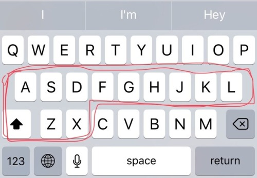
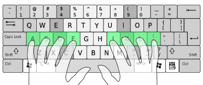

Your keysmashing is only valid if it includes letters
from the following highlighted region:

Examples: asjglgjjggskaldhkakakdhh
agafsjdka
Lgjldhdkflsjjdldhh
Sgdkkfjdlsjagadshdkgllhjsjaldhzxajdkgsh
The above examples are valid
Examples of invalid and strange looking keysmashes:
Oteiyoeodortwowuyoe
Pwyeorncnbvncbmbvnvpwu
Itpyuye
Ncmvbb
You see, key smashes from outside the highlighted region are
strange looking because they look like they could be valid words
from a foreign language(welsh or Swedish) or they simply lack the
size and shape variations of the highlighted region and thus cannot
properly convey the E•mo•tion behind a key smash
I WAS WONDERING WHY TF MY KEYSMASHES LOOKED SO BAD
It has to primarily be comprised of letters that are part of
the classic typing resting position for your hands,
the “Basic Position”, or it looks forced instead of spontaneous

“g” and “h” are fine because they’re
right there, “z” “x” and “q” are okay because they
look funny, are almost never used in real words, and break up the monotony
of the middle row’s heavy usage, and you can throw in like, ONE other
letter from anywhere else on the keyboard for personal style and to indicate
exuberance of flail